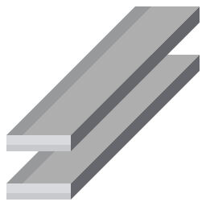
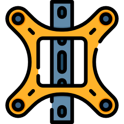
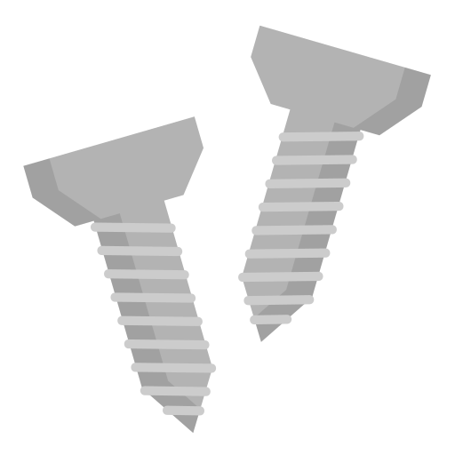
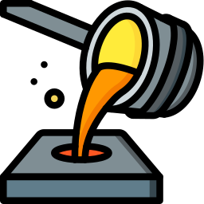
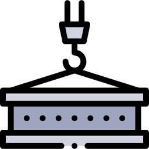
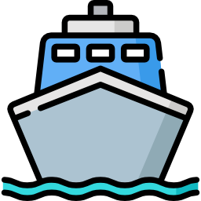

HOME > 고객센터 > 선박기초상식
선박기초상식
“조선산업의 새 역사 창조”
선박의 종류
선박은 사용목적, 화물 상태, 적재방식에 따라 구분할 수 있습니다.
선박은 사용목적에 따라 상선, 특수작업선, 군함, 어선 등으로 나눠집니다. 상선은 화물을 나르는 화물선과 사람을 나르는 여객선, 그리고 사람과 화물을 함께 나르는 화객선으로 구분됩니다.
화물선은 화물의 종류에 따라 액체 화물을 운송하는 탱커류와 dry cargo를 운송하는 건화물선 그리고 겸용선으로 구분됩니다.
화물을 적재하는 방식에 따라서는 자동차와 같이 스스로 이동할 수 있는 화물을 운반하는 선박을 Ro-Ro(Roll-on Roll-off)선이라 하고, 포장된 화물을 올렸다 내리는 방식은 Lo-Lo(Lift-on Lift-off)라 하며, 도저히 크레인으로 싣지 못하는 작은 선박이나 거대한 철구조물을 수송할 때는 화물을 물에 띄워 놓고 배가 약간 가라앉았다가 뜨면서 들어올리는 Fo-Fo(Float-on Float-off)선이 있습니다.
-
액체상태의 화물을 나르는 배 유조선 유조선은 화물창을 여러 개의 구획으로 나누고, 각 구획의 배관을 통해 원유나 석유제품을 저장·운송하는 선박으로 선체 구조는 화물창 벽이 곧 선체 외판이 되는 단일 구조였으나, 1983년부터 발효된 선박으로부터의 해양오염을 방지하기 위한 국제협약에 따라 화물 탱크의 보호적 배치가 취해지면서 바닥과 외판의 구조가 변했습니다. - 1. 원유운반선
- 유전이 있는 수출국 터미널에서 정유공장이 있는 수입국 터미널로 원유를 운송하는 역할을 하는 선박으로, 적재 가능한 원유량으로 크기를 표시합니다.
- 2. 셔틀탱커
- 해저유전의 원유를 생산하고 저장하는 FPSO로부터 해상에서 원유를 전달받아 육상 터미널로 운반하는 선박입니다. FPSO와의 근접작업 중 충돌을 방지하기 위해 위치제어성능이 요구되기 때문에 컴퓨터를 통해 트러스터와 프로펠러, 러더 등을 제어함으로써 원하는 선박의 위치와 방향을 유지하는 Dynamic Positioning 시스템을 장착합니다.
- 3. 정유운반선
- 탱커선 중에서 정유과정을 거친 석유제품을 운반하는 선박으로 정유공장 지역에서 전세계 석유제품 소비지로 운송하는 역할을 합니다. 통상 파나막스 이하 크기로 다품종의 화물을 동시에 운송하기 때문에 화물창의 구획이 많은 복잡한 구조를 갖습니다.
화학제품 운반선 고순도 유지가 요구되거나 부식성이 강한 화학제품을 전문 운송하는 선박으로 화물창 및 배관에 특수도장, 스테인레스강을 사용하는 것이 가장 큰 특징입니다. 정유운반선보다 작은 선박이 대부분으로, 액체 화학제품은 종류도 많고 화학·물리적인 성질이 달라 운항중 세심한 주의가 필요합니다. 여러 종류의 화학제품을 동시에 운송할 수 있도록 화물창 구획이 많고, 화물간 오염방지를 위한 화물창별 독립 배관계통이 구성됩니다. 더불어 선박운영의 유연성을 확보하기 위해, 정유제품도 운송할 수 있는 Product/Chemical Tanker의 형태가 많습니다. 액화천연가스 운반선 LNG선은 천연으로 생산되는 비석유계 액화 천연가스를 운반하는 선박입니다. LNG의 주성분은 메탄(비등점 -162℃)이 90% 이상을 차지하며, 액화된 메탄의 부피는 기체상태 부피의 1/600, 비중은 0.46입니다. 고압과 극저온 상태에선 일반 금속의 취성(깨어지는 성질)이 크게 증가하므로 이를 피하기 위해 LNG선 화물창은 특별한 강철로 제작되어야 하며, 저온 유지를 위한 냉동장치와 보온설비가 필요합니다. 액화석유가스 운반선 LPG는 프로판가스(비등점 -42℃)와 부탄가스(비등점 -5℃)로 구성돼 있으며, 액화시키는 방법에 따라 가압식(상온에서 압력을 높여 액화)과 저온식(대기압 하에서 온도를 낮춰 액화)으로 구분합니다. -
고체상태의 화물을 나르는 배 컨테이너선 신속한 운송이 요구되는 화물을 취급하기 때문에 다른 종류의 선박에 비해 속도가 빠릅니다. 컨테이너는 20피트(TEU, Twenty-foot Equivalent Unit)와 40피트(FEU, Forty-foot Equivalent Unit)의 두 종류가 사용됩니다. 살물선 곡물, 광석 등 포장하지 않은 채 그대로 싣고 수송하는 선박으로 하층의 화물이 짓눌리지 않도록 중갑판으로 사이를 막지만 살물선에는 칸막이가 없는 것이 특징입니다. 항해중 화물이 한쪽으로 쏠리지 않도록 톱사이드탱크, 호퍼탱크 등을 둡니다. -
여객과 여객의 차량을 나르는 선박 페리선 관광을 목적으로 여러 항구를 순회하는 크루즈선과 달리 승객을 한 곳에서 다른 곳으로 운송하는 것을 목적으로 하는 여객선입니다. 동일 구간을 시간표에 따라 운항하는 정기여객선의 형태로 운항되며 유럽에서 특히 발달한 선종입니다. 자동차와 여객을 함께 운송하는 선박의 형태가 일반적으로 Car Ferry 또는 Passenger Ferry로 지칭합니다. 크루즈선 크루즈선은 1,000명 이상의 승객을 태우고 하룻밤 이상을 운항할 수 있도록 수백 개의 객실과 배 안을 오르내릴 수 있는 엘리베이터 뿐만 아니라, 카지노, 극장, 수영장, 테니스코트 등의 오락시설까지 갖춘 선박으로 흔히 떠다니는 해상 호텔이라고 부릅니다. 크루즈선은 가장 건조하기 어려운 배로서 호텔 같은 안락함과 각종 편의시설의 고급화 등 우수한 기술력을 필요로 하기 때문에 꿈의 선박으로 불리는 고부가가치 선박입니다. -
특수작업선 드릴십 드릴십은 해상플랫폼 설치가 불가능한 깊은 수심의 해역이나 파도가 심한 해상에서 원유·가스를 시추할 수 있는 선박 형태의 시추설비입니다. 드릴십은 선박 기동성과 심해 시추능력을 겸비한 조선과 해양 플랜트 기술이 복합된 선박입니다. 쇄빙선 얼음을 파괴하여 선로를 열어주는 선박으로, 다른 일반 선박의 항로를 개척해 줍니다. 일반적으로 항해가 불가능한 결빙 해역에서 항로를 개척함으로써 화물선 선단 등이 화물을 운송할 수 있도록 돕습니다. -
군사용 함정 전함 가장 강한 화력을 보유하면서 함대를 선도하는 함정이지만 현대해전에서는 전함이 너무 무거워 기민하지 못한 전투력 측면의 단점이 있어 건조하지 않고 있습니다. 순양함 전함보다는 화력과 규모면에서 작으며, 기동함대를 호위하고 장기간 순찰 임무를 수행하는 전략 함정입니다. 구축함 기동함대의 외곽호위와 대잠수함 작전 및 연안 경비를 수행하고, 임무에 따라 호위구축함(Frigate type)과 전투구축함(Corvette type)으로 나뉩니다. 항공모함 항공기의 전투반경을 넘어서는 원거리 작전을 수행하기 위해 운용되는 전략 함정입니다. 잠수함 수중작전/연안 경비임무/장기간 작전 수행을 위해 활용합니다. 최근에는 디젤식에서 핵잠수함 시대가 도래했습니다.
선박건조과정
-
- 1. 설계
- 선주가 요구하는 사양에 맞춰 컴퓨터로 설계 도면을 그립니다.
-

- 2. 강재적치
- 생산제품별로 강재를 적치합니다.
-
- 3. 강재절단
- 설계 도면에 따라 강재를 절단합니다.
-

- 4. 조립
- 절단된 강재들을 용접하여 선박의 일부분을 만듭니다.
-

- 5. 의장
- 선박의 일부분인 블록에 파이프나 배선 등의 의장작업을 합니다.
-

- 6. 도장
- 배에 녹이 슬지 않도록 친환경적 제품으로 페인트 작업을 합니다.
-

- 7. 탑재
- 완성된 블록을 도크로 옮겨 탑재하여 선박의 모양을 갖춥니다.
-

- 8. 진수
- 도크에 물을 채워 완성된 선박을 바다로 띄웁니다.
-
- 9. 안벽작업
- 진수된 선박을 안벽에서 선실의 인테리어 및 각종 장비를
설치하고 테스트를 하여 마무리 작업을 합니다.
-
- 10. 시운전
- 해상에서 선박의 성능을 최종적으로 TEST합니다.
-
- 11. 명명식
- 선주가 직접 방문하여 완성된 선박의 이름을 부여하는
행사를 합니다.